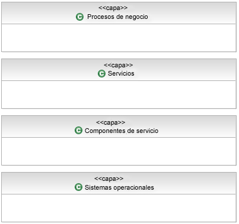
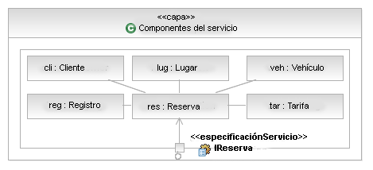

Las capas ofrecen los siguientes beneficios:
-
Las capas ayudan a aportar atributos de modificabilidad y portabilidad de calidad a un sistema de TI. Un cambio en
una capa inferior que no afecte a su interfaz no necesitará cambios en una capa superior. Por ejemplo, cualquier
servidor de aplicación compatible con J2EE™ que cumpla el estándar J2EE™ puede sustituirse libremente sin necesidad
de cambiar a software de nivel de aplicación. Un cambio en una capa superior que no afecte a las facilidades que
requiere de capas inferiores no afecta a ninguna capa inferior. En general, los cambios en un sistema de software
con capas que no afecten a ninguna interfaz se confinan en una sola capa.
-
Las capas forman parte del patrón que la arquitectura desempeña en la construcción del sistema. Conocer las capas
en las que reside su software, los desarrolladores saben en qué servicios pueden confiar en el entorno de
codificación. Las capas pueden definir asignaciones de trabajo para equipos de desarrollo (aunque no siempre).
-
Las capas forman parte del rol de comunicación desempeñado por la arquitectura. En un sistema grande, el número de
dependencias entre módulos se amplía rápidamente. La organización del software en capas con interfaces es una
herramienta importante para gestionar la complejidad y comunicar la estructura a los desarrolladores.
-
Las capas ayudan con el rol de análisis desempeñado por la arquitectura. Se pueden utilizar para analizar el
impacto de los cambios en el diseño.
Las capas pueden ser estrictas o no estrictas. Un esquema estricto de capas significa que los componentes sólo pueden
utilizar componentes en la misma capa o en capas inmediatamente por debajo de ellas. Un esquema de capas no estricto
significa que los componentes pueden utilizar componentes en la misma capa o en cualquier capa inferior.
Observemos que como regla general, no obstante, los componentes deberían poder utilizar componentes en capas
superiores. Si los componentes tienen dependencias en componentes de capas superiores, entonces se volverá difícil
sustituir los componentes de capas superiores sin tener que cambiar los componentes de capas inferiores. Para obtener
más información, incluidas las técnicas de modelado de capas, consulte Concepto: Particionamiento de soluciones.
Un punto importante que debe tenerse en cuenta es que las capas de software no son iguales a los niveles. La asignación
a máquinas en un entorno distribuido, el flujo de datos entre elementos, y la presencia y utilización de canales de
comunicación tienden todos a expresarse en imágenes de nivel que pueden ser indiscernibles de los diagramas de capas.
Los diagramas de nivel tienden a mostrar flechas de dos direcciones que indican una comunicación bidireccional de algún
tipo. La comunicación bidireccional (simétrica) no es una buena noticia en un diagrama de capas. Además, la asignación
de un componente a un nivel se basa en las reglas de colocación que se tienen en cuenta al definir la arquitectura
operativa y es definida por las características de nivel de servicio necesarias del sistema. La diferencia principal
entre los diagramas de capas y las imágenes de niveles es que las primeras no tienen noción de colocación mientras las
segundas sí lo tienen claro.
Reglas de miniatura para capas
-
Todos los componentes que proporcionan funcionalidad empresarial independiente de aplicación podrían ir en una
capa. Las funciones empresariales independientes de aplicación son tipo "gestión de clientes" y "gestión de
productos" y se aplican a aun rango de distintas aplicaciones.
-
Todos los componentes que ofrecen funciones técnicas, caso del manejo de errores, la autenticación, el registro y
la auditoría podrían ir en otra capa (lógica). Estos componentes son independientes de la empresa y de la
aplicación. En algunos casos, la proximidad a componentes funcionales puede requerir que se coloquen en una capa
común. Se trata de decisiones arquitectónicas y deben documentarse como tales.
-
Los componentes de middleware como la cola de mensajes y el software DBMS relacional podrían ir en una capa más.
Esto también se denomina "Tejido".
Ejemplo
A continuación se muestra una vista a capas de una SOA que muestra capas típicas (y verdaderamente recomendadas) de los
distintos elementos presentes en una solución.

Ahora, en este esquema de capas, es relativamente simple ejecutar allí donde nuestros componentes residan, colocamos
los componentes relevantes para nuestro ejemplo Alquiler de un coche en la capa Componentes de servicio, tal como se
muestra a continuación. Observe que deseamos emplear capas estrictas en nuestro modelo y, por tanto, utilizamos la
composición UML para contener nuestros componentes en la capa Componente de servicio y sólo exponer la funcionalidad de
Componentes de servicio usando puertos delegados allí donde el puerto proporciona la misma interfaz que el propio
componente de servicio.

|